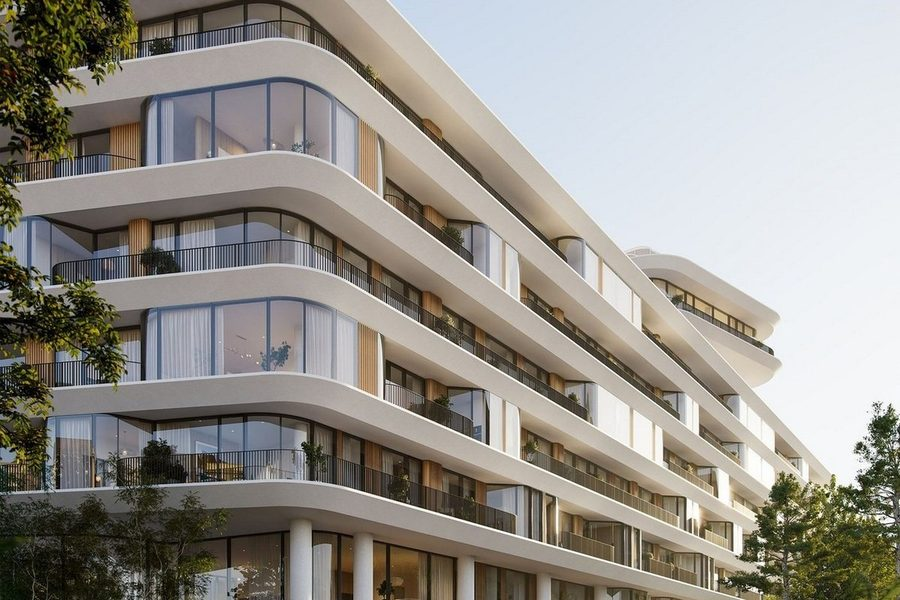

Продаёт застройщик Сухаревская · Малая Сухаревская пл.
Phantom
- Sense Development
- срок III кв. 2027
- 12 этажей
- 103 квартиры
- паркинг на 133 места
- архитектура DROO
| Формат | Площадь | Вход |
|---|---|---|
| 1-комн. | от 67,5 м² | от 135 млн ₽ |
| 2-комн. | от 119,5 м² | от 237,8 млн ₽ |
| 3-комн. | от 181,5 м² | от 314 млн ₽ |
| 4-комн. | от 227,3 м² | от 579,6 млн ₽ |
Метр: 1,65–3,58 млн, медиана 2,48 млн. 51 лот у застройщика.
На заметку: 51 лот у Sense, вход — однокомнатная 67,5 м² за 135 млн, медиана 2,48 млн за метр. Это на 17 % дороже сданного Форума через Сухаревскую площадь, хотя ключи только в III квартале 2027 года. В паспорте — отметка с одним минусом: 1,29 машиноместа на квартиру.